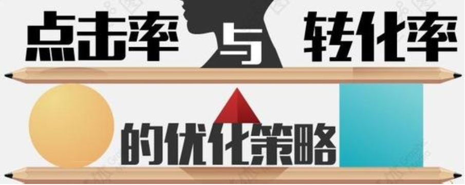
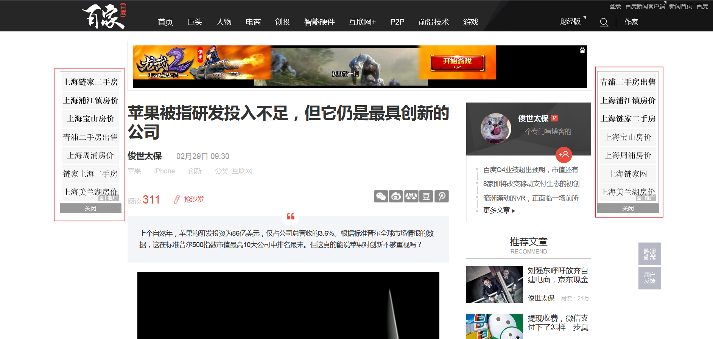

本文介绍了笔者所理解和设想的未来智能互联网广告的投放情境，并从需求可行性和技术可行性两个角度作了简要的分析。
本文目录
-引子
前一阵看了一个由岳云鹏主演的网络剧《先生你哪位》，这是一部由阿里出品的自制剧，讲述的是屌丝和白富美意外发生身体互换的故事，具体内容就不多说了，是在家通过天猫盒子观看的。其中发现的一个亮点是每集剧中男女人物出场之后，在屏幕的右下角经常会有演员们当前行头的广告链接，可直接通过遥控器的快捷键点击进入购买页面。
心里不禁叹到:这真是个好创意哎！这样子的广告比那些在卫视频道看电视剧时候右下角老是些洗发水啦保健品啦这样的广告靠谱多了，虽然这里我拿不到阿里自制剧里这样子的定向广告的效果分析数据，但是给我的直觉就是这会火！
-设想
让我们来稍微设想一下将来：在看电视剧的时候，角落里弹出的广告商品和你正在看的内容是一致的(比如乡村爱情vs老村长酒)；在看电视广告的时候，角落里又弹出广告商品最优惠的电商购买入口；即便在上网浏览新闻的时候，看到明星的图片，角落里就能够弹出明星手里拿着的包包的购买入口，这样子的广告是不是很方便很直接。而广告所要达到的最好效果不就是快速，方便和直接么？搭着互联网高速发展的顺风车，通过植入定向广告的入口，广告再也不只是广而告知了，而是可以很直接的带来订单。我把这样的广告称为互联网定向广告。
-需求可行性
对于以上设想中这样的互联网定向广告的投放形式是不是有市场需求呢？我们从广告主和广告受众两个角度来分析分析。
首先我们来聊一聊广告主，也就是投放广告的人。我相信所有的广告主在投放广告时候都是希望自己的广告能给自己的产品带来更多的销售业绩，也就是常说的转化率，广告主关心的有多少人看到了广告，看到广告的人有多少选择点击进入了广告商品页面，进入了广告商品页面又有多少人真正进行了购买行为，而最终的效果就是看投放广告的成本和带来的销售收入之间的关系，比如投入了100万的广告，最终只带来了50万的销售，那么可以说这样的广告投入是失败的，所有广告主都希望用更小的资金来撬动更大的利润，而这样的需求相信通过我这里所谓的互联网定向广告的投放并不难实现，因为这样的广告会有很高的转化率。

想象一下，用户在互联网的世界浏览任何网页、图片、视频时候，只要出现你家产品，右下角就弹出个小框可以直接进入购买页面，是不是特别酷？用户是不是就更有可能点击，而又进一步直接进行购买？这样子的广告形式是不是特别符合你作为广告主的需求？
再来谈一谈广告的受众。可以说目前大多数人都是比较抵制广告的，特别是在网上冲浪时，不失时机的弹出各种莫名其妙的小广告，而且经常整个网页大部分地方都是这样子的我们称之为狗皮膏药似的广告，看了让人非常的讨厌，尤其是还有很多少儿不宜的壮阳药啦，成人玩具啦这样的小广告！这也正是大家讨厌广告的主要原因，因为目前这样的随意性太强的广告并不是网民所需要的。所以最近几年可以发现，一些广告联盟类似百度，google这样的在提供广告时候已经不是随机的提供了，而是会根据用户在浏览器cookie里的一些关键字进行搜索查询来进行一些定向的广告提供，比如说你最近正好搜索了耐克的运动鞋，那么在浏览网页时你就会发现经常会出现各种耐克鞋的广告。这也说明了这些互联网巨头也看到了定向广告里的商机。正如下面截图，这两天正好上海楼市异常火爆，我搜索了一下相关内容，之后可以看到百度给出的广告就和买房相关：

而我设想的这种互联网定向广告将更符合网民的需求，因为它所提供的内容都是你正在浏览的网页相关的内容，比如你正在看一篇数码相机评测的文章，而右下角弹出的就是这款相机的最优惠的电商平台的购买入口，又或者你在看一篇心灵鸡汤，右下角又弹出这篇心灵鸡汤作者出版的图书的购买入口。我相信这样子的广告并不会令人讨厌，因为它是符合你的口味而定制的。
-技术可行性
那么现如今要实现这样的互联网定向广告的投放需要怎么样实现呢？
对于视频内容中的广告定向投放，《先生你哪位》已经给出了一个现成的例子，对于这样子的形式，由于事先知道内容，可以预先的准备好对应的广告内容，然后进行展现即可。也就是说预先知道男女人物会在剧中如何穿着，然后针对这些穿着的产品准备好对应的广告图片和链接，最后将这些图片以屏幕右下角弹框的形式插播到视频中去。同理，对于各种其它影视剧，广告等视频内容都可以参考这样的步骤来进行广告的定向投放。从视频扩展到图片、文字形式的内容，都可以有针对性的制作定向好的广告内容进行展示，这在技术上已经不是什么难事了。所以这里想要探讨的是不是有可能通过技术手段来实现完全智能的互联网广告定向投放，即不需要人工事先研究内容，手动制作广告和固定展现广告，而是智能的分析互联网上的视频、图片、文字内容，智能的定位需要打广告的内容，智能的寻找合理的电商平台，智能的展现给用户？
可以想到的技术上需要实现的步骤有以下几个：
* 视频识别
* 图片识别
* 文字识别
* 电商平台搜索
* 广告内容自动生成
* 广告内容自动展现
其中前三步智能识别技术需要做到的是能从视频、图片、文本内容中识别出广告商品，比如需要在能识别出人物衣着，驾驶车辆，家居用品等等实体之后进一步通过海量比对来进行精确识别到这些实体的品牌、款式，从而形成后面进行搜索可以采用的关键词。目前类似这样的智能识别是需要突破的关键技术，一时旦生成了精确的搜索关键词，就目前的技术来说已经可以进行电商平台的搜索和广告的展现了，一些比价软件和网站做的就是类似这样的功能。而最后广告内容的智能自动展现也需要前面智能识别出的结果作支撑，需要在识别成功的时候做展现，而不是随机的展现。
相信随着大数据、云计算、图像识别等技术的快速发展，我所设想的这种智能互联网广告投放实现日子也已经越来越近了，或许某个角落有创新公司已经在开发这样的平台或工具了，或许某一天你突然发现百度和google广告的内容已经不是你自己cookie里的历史内容，而是根据你当前浏览的内容智能推荐的了。